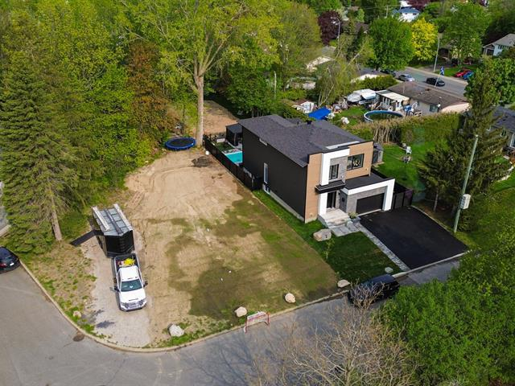

À vendreTerrain résidentiel · Centris 14952731
Terrasse
Fonrouge
Chambly, Québec
550 000 $
17 293pieds carrés
Résidentielzonage
15 joursoccupation
Le terrain
Un projet à imaginer,
dans un secteur établi.
Au bout d’un cul-de-sac paisible de Chambly, ce terrain boisé de 17 293 pi² offre l’espace pour bâtir une propriété à votre image. Le voisinage récent, la proximité d’un parc et l’accès rapide aux services créent un équilibre rare entre calme et commodité.
Caractéristiques
L’essentiel, clairement.
Superficie du terrain17 293 pi²
ZonageRésidentiel
TopographieTerrain boisé
EnvironnementCul-de-sac paisible
ProximitéParc et services
Occupation15 jours après acceptation
Valeur et frais
Repères financiers.
Prix demandé550 000 $
Évaluation municipaleNon émise
Taxes municipales et scolairesÀ confirmer
Localisation